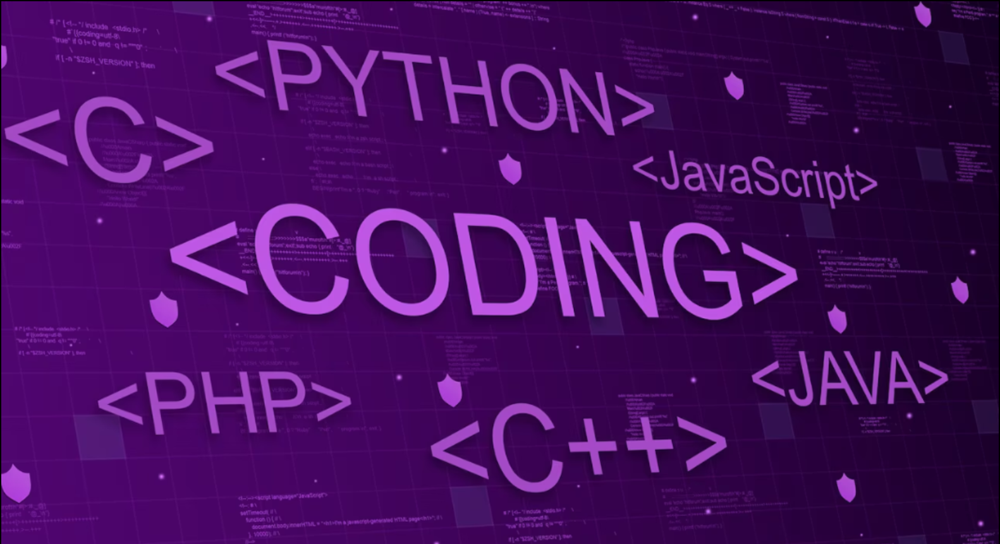
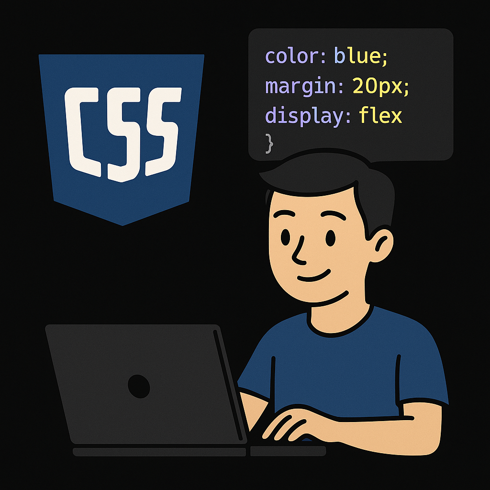

If you're just starting out in coding,
do not worry ,that is totally normal to feel confused first. But it is also really exciting!
This page has some cool stuff to help you understand what itis like to be a developer and what
tools you can learn.
|
When I started learning how to code, I didn’t know where to begin. But I found out that being a developer
means you get to build fun and useful things like websites, games, and apps.
|
|
To begin coding, I started with some simple languages like HTML, CSS.
They are great for making websites.
I tried Python because it is really beginner-friendly. You don’t have to learn
everything Just learn step by step , you will get the hang of it.
|

|
|
HTML is like the skeleton of a web page. It is not hard to learn it just uses tags like Images.
I had fun playing around with it and seeing my first page come to life in the browser.
|

|
Then I learned CSS, which lets you change the colors, fonts, and layout of your site.
It made my basic
HTML pages look way cooler. It is kind of like decorating your room ,
but you get to choose how things look!
|

|
|
Python is one of my favorite languages. It is really easy to read, and you can do so many things with
it like making small tools, even doing data science. It was one of the first real
coding languages I felt comfortable with.
|
|
JavaScript is a little tricky at first, but it is super powerful. It helps you make websites interactive.
For example, I learned how to make a button that shows a message when clicked. That felt awesome. With
time, I started understanding more and even built a small game!
|
|